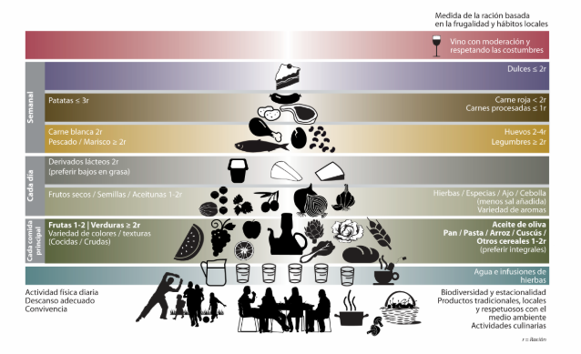

Muy pronto voy a llenar este espacio con lo que voy aprendiendo sobre nutrición.
Grasas provenientes de:
Los cereales y los vegetales son la base de los platillos.
Las carnes y similares son ahora la guarnición.
Se añaden factores socioculturales y actividad física.
Tomar de 1.5 a 2 litros de agua.
